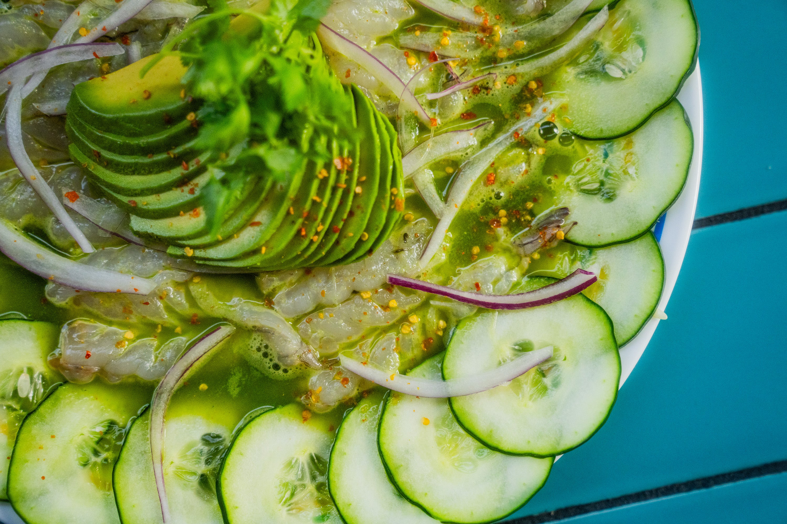

Aguachile recipes

Descripción
El aguachile es un platillo tradicional y emblemático de la costa del
Pacífico mexicano, particularmente del estado de Sinaloa.
Consiste en camarones frescos marinados en un jugo a base de limón, chiles
frescos (habitualmente chile serrano o jalapeño) y cilantro, mezclados con
verduras frescas como cebolla morada y pepino.
Ingredientes
- 500 g de camarón mediano o grande
- 1/2 taza de jugo de limón
- 2 a 3 chiles serranos
- 1/2 manojo de cilantro fresco
- 1 pepino
- 1/2 cebolla morada
- 1 aguacate
- Sal de grano y pimienta negra al gusto
Pasos de la preparación
-
Poner a punto el camarón: Asegúrate de que los
camarones estén limpios y desvenados. Hazles un corte a lo largo del
lomo (corte mariposa) para que absorban bien el marinado. Acomódalos
bien extendidos en un plato plano o platón grande. Salpimienta al gusto.
-
Preparar la salsa verde: En la licuadora, mezcla el
jugo de limón, los chiles serranos (sin pedúnculo/tallo), el cilantro
fresco y una pizca de sal. Licúa muy bien hasta obtener una mezcla verde
homogénea.
-
Marinar: Vierte la salsa verde directamente sobre los
camarones extendidos, asegurándote de que todos queden bien cubiertos.
Deja reposar durante 8 a 10 minutos en el refrigerador. (Nota: El
aguachile no se deja marinar mucho tiempo para que el camarón mantenga
su firmeza y textura fresca).
-
Incorporar la verdura: Saca el platón del refrigerador
e integra la cebolla morada fileteada y las rodajas de pepino. Mezcla
suavemente con una cuchara.
-
Decorar y servir: Decora la superficie con las
rebanadas de aguacate y sirve de inmediato. Acompaña con tostadas o
galletas saladas.
Home